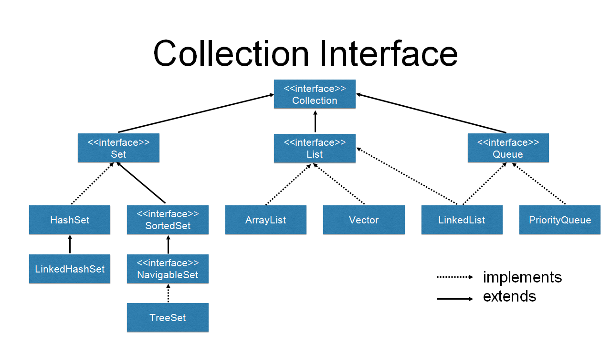
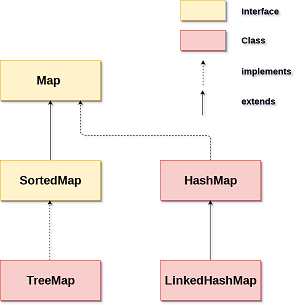

Java的Collection和Map（是的，Map并不属于Collection）是位于java.util包中的，顾名思义它是一个好用的工具类，它为我们封装了各种各样的数据结构，并提供了好用的API。Java集合的内容其实比较多，要把每一种集合的原理都搞清楚在一篇文章中是做不到的，所以这里只是一个概览以及一些重要的知识点记录。
Collection 体系结构图


Collection 增删改查API
无论怎么封装，我们最终的目的还是操作数据，所以一些常用的API是需要记住的，这样你就会少做一些不必要的操作。例如你在把一个集合添加到另一个集合的时候就不会再傻傻的用for循环而是使用addAll方法了
1 | - C(Create) / U(Update): add/addAll/retainAll |
可以看到这里并没有我们经常用的ArrayList的get(int index)方法，因为ArrayList内部是个顺序存储的数组，是一个线性的结构，一个后面接着一个，所以可以按索引存储。
其实List接口都实现了get方法，所以个人理解，List接口设计出来就是为了描述这种线性的一个后面跟着一个的存储结构的
而Set接口则没有实现这个方法，无论是利用Hash还是利用Tree，都无法根据索引随机访问
- retainAll
其他的方法看名字都知道啥意思，但是retainAll要稍微解释下：
retainAll: 求交集。类似下面这样的概念：
1 | [1,2,2,3].retainAll([1,2]) => [1,2,2] (非java代码) |
- remove
再说一下remove方法，remove方法的参数是Object类型
那我怎么知道自己删的是哪个呢？其实包括上面的retainAll方法也是这样，数字还比较好比较，如果是一个对象我改怎么比较呢？
看一下ArrayList的remove方法：
1 | public boolean remove(Object o) { |
其他的其实都不重要，我们需要看到的就是当obj不为null时，它是怎么比较的。对，就是那个equals方法，它被用来比较两个对象是否相等。
equals
从上面的例子我们可以看出，equals方法是应用的非常广泛的，无论你是想删除、更新还是想看看你的集合里面有没有这个元素(contains)你都需要进行对象的比较，来看看你传入的对象和当前集合中的对象是否相等。
Object自己的equals方法是比较两个对象的地址 而由于多态的存在，当我们重写了equals方法后，在比较对象的时候就会使用我们自己的方法来进行对象的比较了。
其实equals有一个好基友叫HashCode，但放到后面再说
HashSet 和 HashMap都是比较常见的类，包括后面要说的HashCode都跟他们密切相关，但在此之前我们得先了解一点Hash算法的知识。
一个小小的面试题
在正式讲Hash算法之前，先抛一个常见的面试题出来，那就是为什么在重写equals的时候一定要重写HashCode，大家可以带着问题再去后面的内容
Hash
Hash算法简述
Hash算法比较复杂，简单的理解就是我根据一个元素映射到一个值，映射出来的这个值是独一无二的，那么我们就可以通过这个值来找到这个元素。
例如说我们有一个数组，然后我想往里面存储Student对象（对象里面有id和name属性，id是学号），我们当然可以用数组的方式，挨个的往里面存。但是你可以想一下，这样做存的时候是很方便，可是找的时候呢？我们就必须遍历整个数组，效率很低。
现在我们采用Hash算法，怎么做呢？我们假设现在有这样一个算法，根据这个神奇的算法我们可以将Student对象的姓名（name的值）映射成一个数组的索引，并且暂时假设映射出来的索引肯定不会跟其他人重复。
那么当我们需要从这个数组里面找某个Student对象的时候只需要根据Hash算法计算这个Student对象的name所对应的索引，然后通过数组，一下子就可以访问到了。
我们经常看到的HashCode其实就是我们这里所说的这个索引
Hash冲突
上面我们其实也可以看到，上面那个案例最大的隐患就是我们假设通过那个神奇的算法所得到的数组索引是绝对不会重复的，但其实并没有这样神奇的算法，好的算法会尽量降低这个概率，让索引的分布尽可能的"平均",但是却没办法保证绝对不重复，所以当两个元素的HashCode（即计算出来的索引值）相同的时候就产生了Hash冲突。
解决Hash冲突
产生Hash冲突意味着一个数组上的某个位置有两个元素，此时我们怎么办呢？
这里我觉得其实可以再用一个数组也没啥问题，但是Java中采用的是链表，关于这一点我还没完全搞明白，搞明白再来更新。
总之就是我们在这里可以再次采用一种数据结构把这两个元素给组织起来。
为了模拟出Hash冲突，我们假设这个神奇的算法在计算的时候会忽略掉Student对象的大小写
现在我们想要查询一个Student对象会怎么样呢？我们仍然会通过一个神奇的算法将这个Student对象的name变成一个HashCode（数组的索引），然后通过它去找到数组上的这个位置，然后我们发现这个位置上有两个元素，所以没有办法直接把值返回，接着我们会尝试用学生的id进行比较，然后从两个元素中找到自己想要的那个，这里所规定的用id进行比较只是我们的规定，其实就是使用equals方法进行比较。但你可以看出来，这样的效率仍然很高，我们也就比原来多查了一两次而已
Hash 小结
总的来说利用Hash进行查找的过程就是先利用Hash算法计算对象得到一个索引值HashCode，利用这个HashCode去数组对应的位置上找，如果只有一个元素，那找到了，如果有多个元素使用equals方法继续比较，相等就找到了，都不等就没找到，至于找到之后干什么责由你决定，可能你想删除，或者是更新，或者仅仅是想看看是不是有这个对象(contains)
你也可以这样想，equals中的内容是我们想要得到的目的，比如我们认为两个人名字一样他们就应该是同一个人，而HashCode则是提高我们比较效率的东西，也就是说它是一种手段
HashCode的特性
- 同一个对象通过Hash算法（java中即使hashCode方法）所得到的值是一样的
- 两个对象通过equals返回true，则HashCode也相等
- 两个对象通过equals返回false，HashCode也可能相等
结合这几个特性再回头来说那个面试题，重写equals方法就要重写HashCode方法也就是为了符合这几个原则
Set
Set是集合，跟我们初中学的集合是类似的概念，就是一个不能有重复元素的集合。
但是集合的另外一个特点无序性，并不是每一个子类都有这个特点，有时我们也想要有序的集合
HashSet
顾名思义，就是利用Hash算法实现的Set，因为每次新增的时候都要判断Set中的元素是不是已经存在过，如果用List实现效率比较低，所以我们可以使用Hash算法，只要确保我在新增或者更新的时候如果出现重复的元素就将他更新掉，那么整个Set就是不重复的了
其他的Set
- LinkedHashSet
HashSet和真正的集合一样是无序的，如果我们想要插入有序的话，那么就可以使用LinkedHashSet，它的内部维护了一个链表记录了我们插入的顺序。 - TreeSet
TreeSet 同样是一个有序的Set，只不过这里的顺序并不是我们插入的顺序，而是集合中数据的大小，那么集合中哪个对象大哪个对象小呢？说到这里是不是特别熟悉，是的，这和equals的约定特别的相似，你的对象只需要实现Comparable接口即实现了compareTo方法，那么TreeSet就会按照这个比较大小的方式在你插入数据的时候就完成集合的排序（用树的方式）
Map
Map体系独立于Collection之外，Collection都是一个坑位一个人，而Map则是一对，key和Value
Map的CRUD接口
- C/U: put()/putAll()
- R: get()/size() 、containsKey()/containsValue()、keySet()/values()/entrySet()
- D: remove()/clear()
Hashmap
HashMap的key就是一个Set，所以HashMap的key是不能重复的，但是Value是可以重复的，它所使用的HashCode和equals的约定和HashSet是相同的
其他Map
LinkedHashMap,TreeMap,也和HashSet 是类似的
使用成熟的类库
了解原理是为了更好的理解使用的场景，不要轻易的自己发明轮子，在了解原理之后去使用经过无数次生产测试的成熟类库是更好的选择，例如Collections,Guava